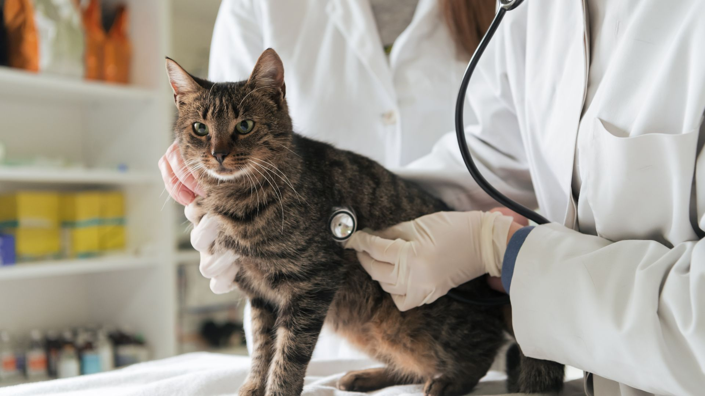

Erfahrene Tierärzte und Praxisinhaber
Menschen, die selbst Verantwortung übernehmen und eine bestehende Praxis weiterführen möchten.
Tierarztpraxis verkaufen · Nachfolge in der Tiermedizin
Wir helfen, den passenden Nachfolger zu finden.
Jetzt Praxis vorstellen ↗Keine erfolgsabhängige Vermittlungsprovision für Verkäufer.01 · Ihre Ausgangssituation
Sie möchten Ihre Tierarztpraxis oder Tierklinik verkaufen, sich aus dem operativen Geschäft zurückziehen oder einen geeigneten Partner für die nächste Entwicklungsphase finden?
MERGIU bringt Praxisinhaber mit erfahrenen Nachfolgern, strategischen Käufern und Investoren zusammen – persönlich, diskret und branchenübergreifend.

02 · Warum die richtige Nachfolge entscheidend ist
Sie haben über Jahre eine Praxis aufgebaut, Patienten betreut, Mitarbeiter beschäftigt und Vertrauen geschaffen. Eine Übergabe ist deshalb eine weitreichende Entscheidung.
Der richtige Nachfolger sollte nicht nur wirtschaftlich passen. Er sollte auch verstehen, was Ihre Praxis ausmacht.
Eine gute Nachfolge berücksichtigt deshalb nicht nur den Kaufpreis, sondern auch die Zukunft des Unternehmens.
03 · Wie MERGIU Sie unterstützt
Nicht jeder Interessent ist automatisch der richtige Käufer. Deshalb betrachten wir Ihre Praxis nicht nur als Verkaufsobjekt, sondern als eigenständiges Unternehmen mit individuellen Anforderungen.
Über unser Netzwerk suchen wir nach passenden Kontakten aus unterschiedlichen Bereichen:
Menschen, die selbst Verantwortung übernehmen und eine bestehende Praxis weiterführen möchten.
Unternehmen, die bereits im tiermedizinischen Bereich tätig sind und ihre Standorte oder ihr Angebot erweitern möchten.
Kapitalgeber, die das Potenzial einer Praxis erkennen und gemeinsam mit erfahrenen Führungskräften weiterentwickeln möchten.
Geeignete Personen aus dem bestehenden Umfeld, die für eine Übernahme oder Beteiligung infrage kommen können.
Unser Ziel ist es, nicht einfach möglichst viele Interessenten zu finden, sondern Kontakte, die zu Ihrer Praxis und Ihren Vorstellungen passen.
04 · Besonders für größere Praxen und Tierkliniken
Bei etablierten Tierkliniken, größeren Praxisstrukturen und mehreren Standorten ist die Nachfolge besonders anspruchsvoll.
Hier geht es häufig um bestehende Führungsstrukturen, größere Teams, Investitionen, medizinische Spezialisierungen und langfristige Entwicklungspläne.
Deshalb beziehen wir bei der Suche auch strategische Käufer, Praxisgruppen und Investoren ein.
Je nach Größe und Struktur kann auch ein Übergabemodell mit bisherigem Inhaber, neuer Geschäftsführung oder Beteiligungspartner sinnvoll sein.
Sie müssen nicht zwingend von heute auf morgen vollständig ausscheiden. Gemeinsam können unterschiedliche Möglichkeiten einer Übergabe geprüft werden.
Sie übermitteln uns die wichtigsten Informationen zu Ihrer Praxis oder Klinik.
Wir besprechen Ihre Vorstellungen, die Ausgangssituation und mögliche Übergabemodelle.
Wir gleichen Ihr Unternehmen mit potenziellen Nachfolgern, Käufern und Investoren aus unserem Netzwerk ab.
Wenn ein geeigneter Interessent infrage kommt, stimmen wir die nächsten Schritte mit Ihnen ab. Informationen werden nur nach Ihrer Freigabe weitergegeben.
06 · Einwände
Das verstehen wir. Ihre Verkaufsabsicht soll vertraulich behandelt werden. Ein erstes Unternehmensprofil kann anonymisiert erstellt werden. Identifizierende Informationen und detaillierte Unterlagen werden nicht ohne Ihre Zustimmung weitergegeben.
Das sollte auch nicht Ihr Anspruch sein. Neben wirtschaftlichen Kriterien können Erfahrung, Führungsqualität, medizinische Ausrichtung und der Umgang mit Mitarbeitern wichtige Auswahlkriterien sein. Gemeinsam definieren wir, was Ihnen bei einem Nachfolger wichtig ist.
Deshalb beschränken wir die Suche nicht auf einzelne Tierärzte. Je nach Ausgangslage kommen auch etablierte Praxisgruppen, strategische Käufer, Investoren oder Kombinationen aus Kapitalgebern und erfahrenen Führungskräften infrage.
Sie müssen nicht bereits einen festen Übergabetermin haben. Auch eine frühzeitige Orientierung kann sinnvoll sein, um Möglichkeiten, Anforderungen und einen realistischen Zeitrahmen kennenzulernen.
Bei MERGIU zahlen Verkäufer keine erfolgsabhängige Vermittlungsprovision. Für die einmalige Registrierung und Aufbereitung Ihres Unternehmensprofils berechnen wir 184€.
Wir können keine erfolgreiche Vermittlung garantieren. Die Registrierung und Aufbereitung Ihres Unternehmensprofils ist eine eigenständige Leistung und keine Garantie für einen späteren Verkauf.
07 · Warum MERGIU?
Sie haben einen direkten Ansprechpartner und keine anonyme Plattform als Gegenüber.
Wir berücksichtigen Einzelpersonen, Praxisgruppen, strategische Käufer und Investoren.
Ihre Verkaufsabsicht und Unternehmensinformationen werden kontrolliert und nur nach Ihrer Freigabe weitergegeben.
Der nächste Schritt
Stellen Sie uns Ihre Tierarztpraxis oder Tierklinik vor. Wir melden uns persönlich bei Ihnen.
Jetzt Praxis vorstellen ↗